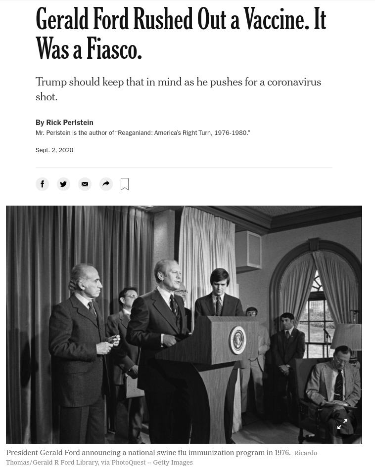
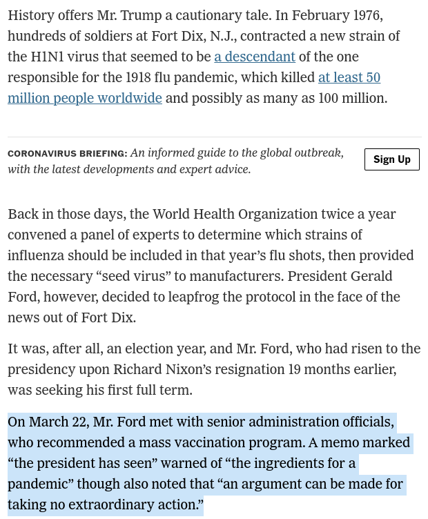
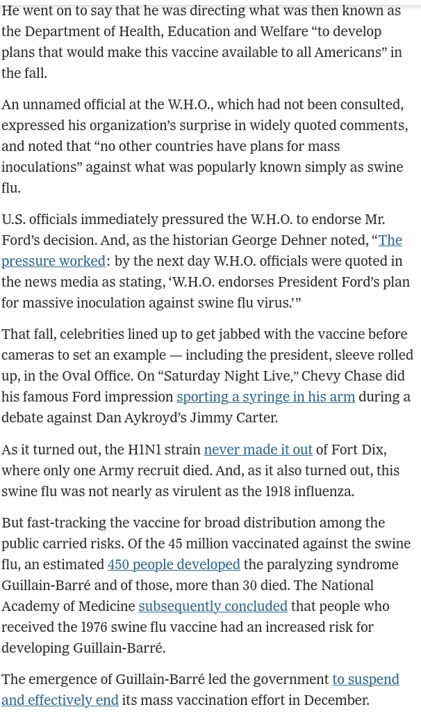
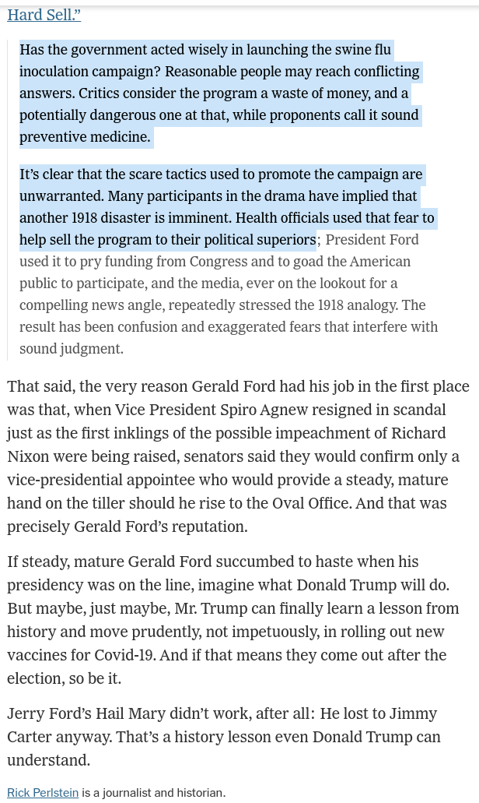
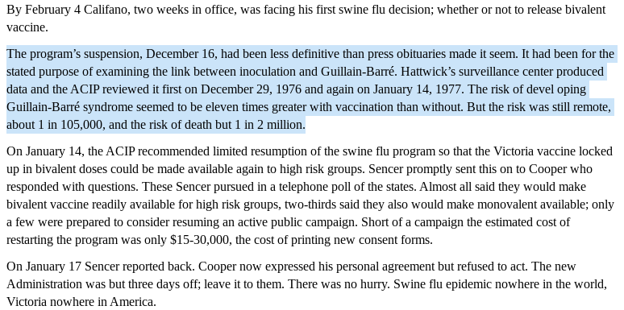
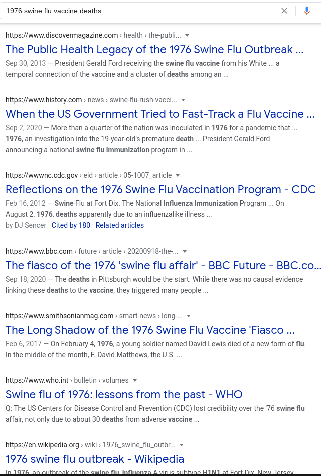
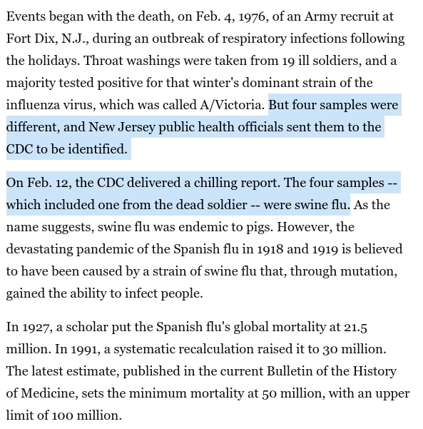
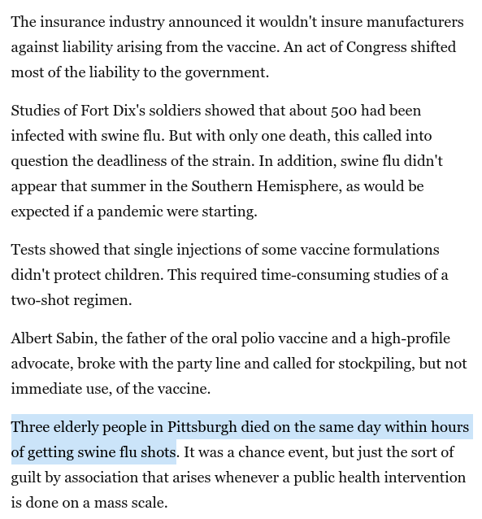
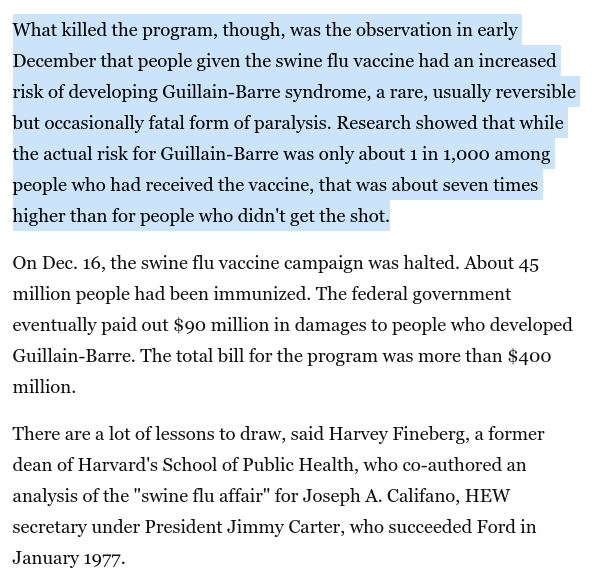

all-knowledge
Contents:
Covid Medical Treatments
Legal Issues
Vaccines
Charts and Graphs
Food Safety
FAQ Frequently Asked Questions
What is the historical background and timeline of key participants of this pandemic
Events in Medical History we might want to consider
1976 Swine Flu Fiasco
Tuskgee Medical Experiments - 40 years of untreated Syphlis
Dengvaxia - 2016 Sonofi Phillipines Denge Fever Deaths and Halt of Use
Dr Sherri Tenpenny explains 7 mechanisms in mRNA vaccines
History of Epidemics
WHO World Health Organization
WEF World Economic Forum
Media and Influencers
Advice for living
Words of Wisdom from Famous People
Resources and additional background material
Letter to the town of Brookine Massachusetts
How you can help
license
help
test2
all-knowledge
»
Events in Medical History we might want to consider
»
1976 Swine Flu Fiasco
View page source
1976 Swine Flu Fiasco
¶









Last change: Tue, 09 Mar 2021 01:40 PM -0500


{kind=link}
{kind=link}
{kind=link}
{kind=link}
{kind=link}
{kind=link}
{kind=link}
{kind=link}
{kind=link}